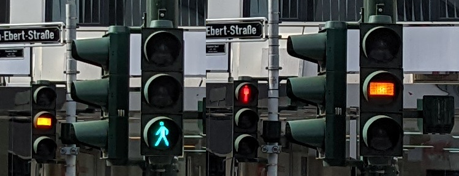

Some examples from a recent trip to Düsseldorf (Germany).
They tested this and then didn't get rid of it again. Now, Düsseldorf is the only German city with yellow for pedestrians.

In software, temporary experiments also tend to stick around.
The old bridge wasn't supporting enough traffic anymore. So they built the new, wider bridge next to it. In an engineering marvel they pushed the new bridge over the old one in just two days.
Software developers, engineers and operators: hot swapping, red-blue-green deployments anyone?
Friends are living near the Düsseldorf airport. By German regulations, their flat's windows should be isolating air traffic noise with three layers of glass instead of the regular two layers. They only have regular windows, but experimental tubing in the walls which was supposed to reduce air traffic noise. The experiment failed and better windows weren't installed.
Software engineering can go wrong, so does real engineering.